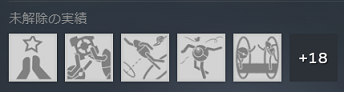
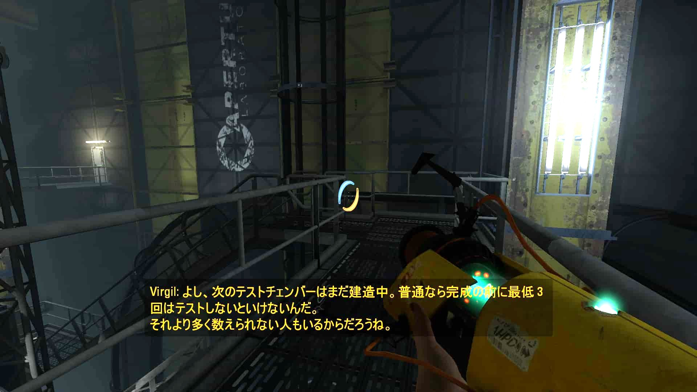
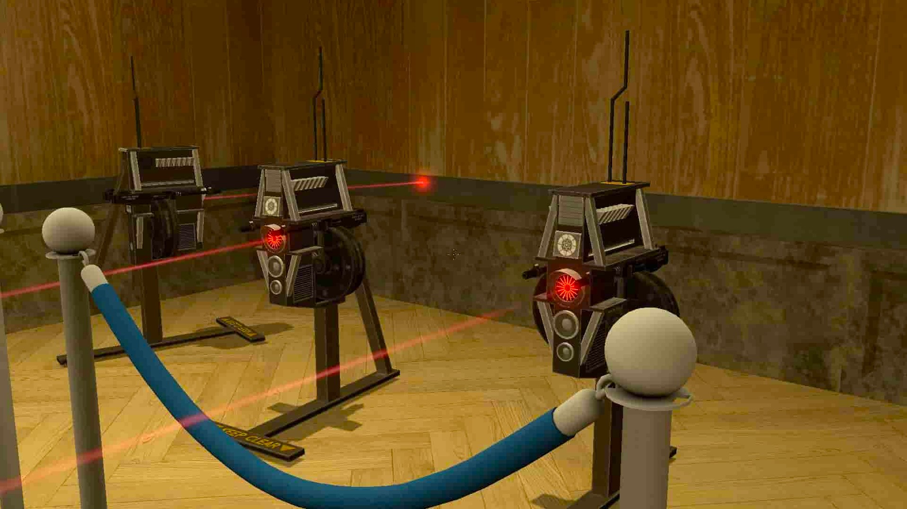
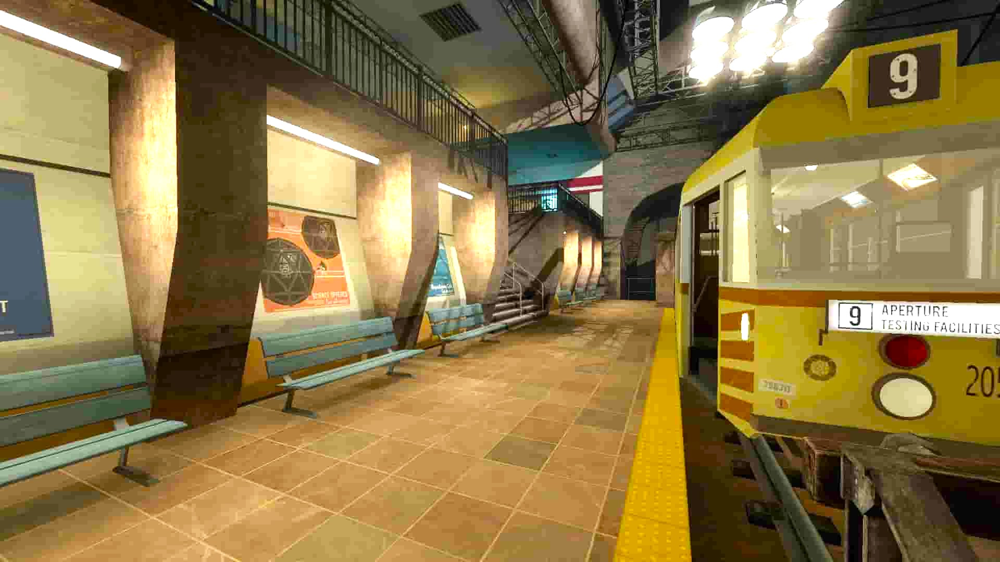
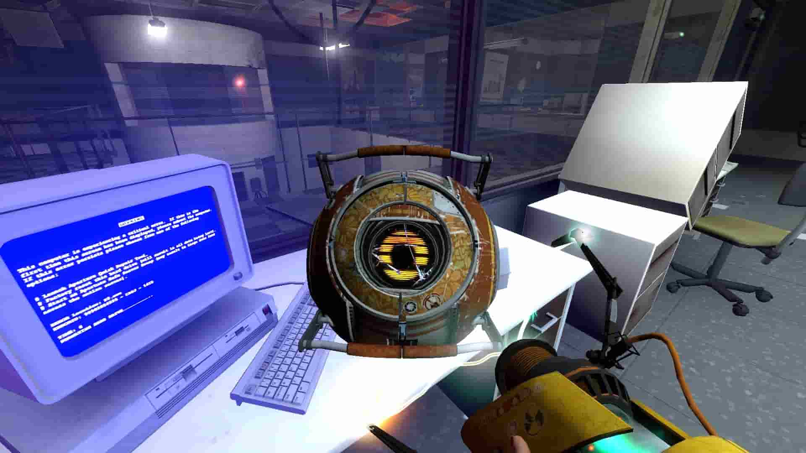

Portal Stories: Melをクリアした
Portal Stories: Melをクリアした

最近、友人と『Portal2』にハマっている。
Switch版を買った友人がCO-OP (協力モード)に誘ってくれたので、同じくSwitch版を購入済みだった私はもちろん承諾し、念願のCO-OPをついに初めて遊んだのだが、そのおかげですっかりPortalに再燃してしまった。
PC版はクリアしているがSwitch版は全然手を付けていなかったので「メインストーリーを全然触ってなくてもCOOPはできるのか?」と心配だったが、どうやら本編の進行度は関係ないらしく、心配はいらなかった。
ついでに久しぶりに Portal2の本編をプレイしてみたが、やっぱり名作だ。超面白い。

▲Steam版のCO-OP実績はまだスカスカだが…
そんなPortalシリーズなんだけども、ファンゲームが存在すると最近知った。
ファンゲームといってもコミュニティ製のテストチェンバーも含むいわゆる「MOD」 の一つなんだけど、その中に「ストーリーがある」 「ボイスつき」 「長作」 「MODなのに独自のストアページがある」というMODにしては完成度が高すぎて異常な存在感を放っているものが何個かあるらしい。
私は好きなゲームの「ファンゲーム」という二次創作には基本的に微妙な感情を抱いている。私が大好きなとある別のゲームにおいて、そのゲームの独特の画風を中途半端に真似たものや、世界観やキャラの崩壊がひどいファンゲームが沢山生まれてしまい、それ以降私はファンゲームというものには「オリジナルの要素や世界観を使いまわして質を下げたガッカリゲーム」という最悪な印象を持っている。 (結構好みだったやつもありますけども)
しかし上述の通り、Portalのファンゲームはなぜか傑作揃いのようで、あまりにも気になったので勇気を出して触ってみることにした。で、今回初めて触ったのは、その中の一つ 『Portal Stories: Mel』である。
ストーリーは、
Portal（無印）の出来事の前の話とだけ書いておく。
良かった点
➊ ポリュームがすごい
全体的なクオリティが本家と変わらない。それなのに無料ゲームなので、もはや怖くなってくる。無知な人に 「これは続編、ついに来ましたPortal3です」って言ってもガチで騙せる気がする。

▲Valve社は2までしか数を数えられない」というおなじみのジョークもある。
➋ テストが解けた時の爽快感が気持ちいい
ゴリ押しやスピードを求められる作業、奇妙な操作やトリッキーな動きなどを全く必要としない、フェアなテストばかりなので、テスト自体は難しいが操作はとても単純である。自力で解けると嬉しくて発狂する。
➌ 旧式タレットがかわいい
本家のほうが好きって人は多いかもしれないが、喋らない旧式タレットも不気味でかわいいぞ！ロボット感が薄くてキャラクターというより「固定の設備」みたいな雰囲気なのも、個人的に好きだ。

▲バグでたまに本家タレットの声が聞こえるのはなぜ？
➍ 全体的に開放感がある！
町、廃墟、オフィス、旧チェンバー、新型チェンバーなど様々な景色を見ることになるので、探検が楽しい。用のない部屋も結構作り込まれているので、人のいないオフィスとか廃墟とかを歩き回るの好きな人にとって最高だと思う。

▲誰もいない駅は少し怖いけど…。
➎ ヴァージルが好き
Portal2のウィートリーやその仲間たちが変わり者ばかりなので、今作の比較的まともなヴァージルは印象が薄いけど、それでも好きだよ。彼のセリフがいっぱいあって退屈しない。

▲彼がウィートリーみたいに後半でプレイヤーを裏切るかどうかは、ぜひプレイしてご自分の目で確かめてください。
➏ BGMがめちゃくちゃ良い
パズルでじっくり悩むから、必然的にBGMが耳に残るんだよね。もしかしてそれが狙いだろうか？OSTがYoutubeで聴けるのもうれしい。
➐ オリジナルの警告看板やポスターが良い
Portalシリーズが好きな理由の一つに、レトロな看板やポスターがいっぱい出てくるという点があるんだけど、このゲームは本家の使いまわしだけではなく、新規で描いたオリジナルのデザインも沢山出てくる！いろんな場所でじっくり眺められるので楽しい。あと普通に絵がガチ上手い…。
➊ テストが難しすぎる
このゲームのテストは難しいものが多いから、自力で解けた時の爽快感は気持ちいい、それは事実だ。
問題は、自力で解けない場合だ。国内外問わず、このゲームの難易度に対するレビューが沢山届いたらしいし、それらのレビューを受けて少し難易度を下げたのが現行版らしい。それでもまだ難しいのに？冗談でしょ？というのが正直な感想。
まず、テストが解けなくてイライラする。で、悔しいけど攻略動画を探す。そして大抵は「何で私はこんな単純なことも思いつかないんだろう」と泣きたくなるような、単純な答えを知ることになる。そこで今度は、自分の馬鹿さに再びイライラするわけ。
現在のバージョンは難易度を下げたものなので、そのことも更に私をイライラさせる…（笑）
攻略動画には人々の「俺はマジのマヌケだ」という嘆きのコメントが並んでて、もう笑えてくる。オレはマヌケじゃない！
本家2作の「難しさ」と「閃きやすさ」のバランスがいかに完璧だったかを改めて感じた。もし、PortalやPortal2がこのゲームと同じくらい難しいゲームだったら、評価がとても低かったと思うなー。
➋ ラスボス戦がしょぼい
奥歯が全部すり減るようなテストをプレイヤーが乗り越えた先に待っているラスボス戦が「これでいいのか･･･?」と困惑してしまうような地味さなのだ。ラスボス戦というよりも、これはただの作業だ！しかしながら、ラスボス戦特有の緊張感に過剰に身構えてしまう私にとって、このくらい地味な方がちょうど良かったのかもしれないが。
➌ 字幕が一気に表示される量がやけに多い
これに関しては、どうしてこうなっているのか全く分からない。理由があるのかないのか知らないが、まだ読み終わらないうちに字幕が消えていく事がかなり多かった。
総合的に見て
文句が多くなってしまったが、それでもPortalシリーズのファンには非常におススメしたい作品だと思った。パズルが難しすぎてそれに時間を大量消費してるうちに、ストーリーが途切れてしまっているような感覚になるけれど、この作品の質自体はとんでもなく高いと感じた。プレイ中に行き詰って頻繁に立ち止まるけれど、景色や小物がよく作りこまれてるので基本的には全く飽きることがない。
実績コンプリートの為にも私はまだ沢山遊ぶだろうし、その時は、攻略動画を見ないとクリアできなかったテストを自力で解けるといいね...。
2026/08/24